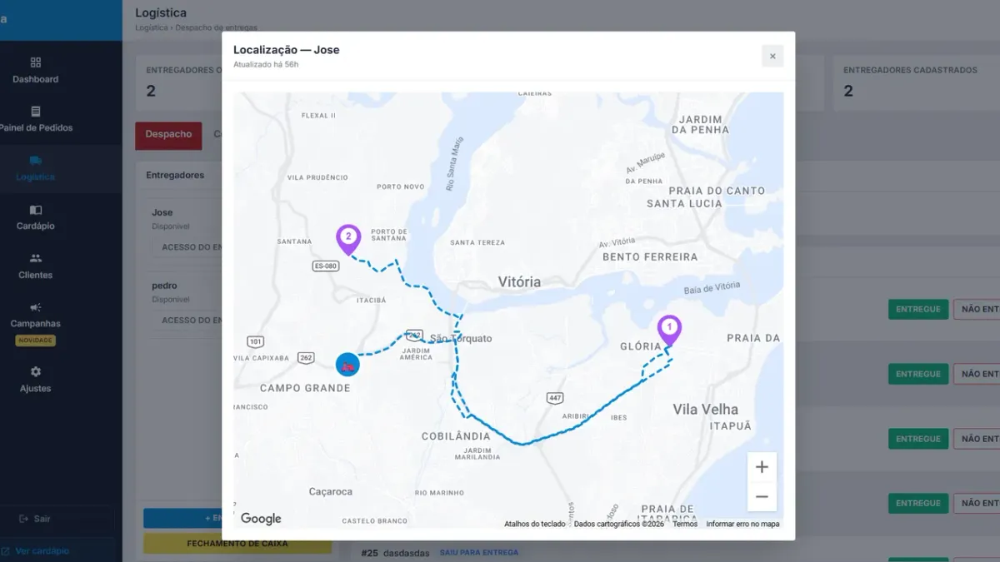

Como calcular e configurar a taxa de entrega por bairro

Taxa de entrega errada é prejuízo silencioso: você cobra R$5 de todo mundo e paga R$12 para o motoboy ir no bairro mais longe. Vamos calcular a taxa certa e configurar por bairro ou por distância.
Passo 1 — Descubra quanto custa cada entrega
Some o que você gasta por corrida:
- Entregador por corrida: o valor que você paga a ele (fixo + por km, se houver).
- Entregador fixo: salário + combustível + manutenção ÷ número de entregas do mês.
- Embalagem térmica e sacola (se não estiver no preço do produto).
O resultado é o seu custo médio por entrega. A taxa precisa cobrir pelo menos esse valor — ou você decide conscientemente subsidiar uma parte.
Passo 2 — Escolha o modelo: por bairro ou por distância
| Modelo | Como funciona | Bom para |
|---|---|---|
| Taxa fixa | Mesmo valor para todos | Área pequena, até ~3 km |
| Por bairro | Cada bairro tem um valor | Cidade com bairros bem definidos |
| Por faixa de km | 0–3 km, 3–6 km, 6–10 km… | Área grande, bairros muito extensos |
Passo 3 — Monte a tabela
Exemplo para uma hamburgueria com custo médio de R$7 por entrega:
| Faixa | Bairros | Taxa |
|---|---|---|
| Até 3 km | Bairro da loja e vizinhos | R$5 |
| 3 a 6 km | Segundo anel | R$8 |
| 6 a 10 km | Bairros distantes | R$12 |
| Acima de 10 km | — | Não entrega |
Perceba: perto da loja a taxa fica abaixo do custo (atrai pedido), longe ela cobre a diferença. Na média, a conta fecha.
Passo 4 — Frete grátis com pedido mínimo
"Frete grátis acima de R$60" aumenta o ticket médio, porque o cliente adiciona uma bebida ou sobremesa para chegar no valor. Só faça isso se a margem do pedido acima do mínimo pagar a entrega com folga.
Passo 5 — Configure no cardápio digital
No Menuzia, a taxa fica em Ajustes › Entrega. A taxa aparece para o cliente no carrinho, antes de fechar o pedido — sem surpresa e sem discussão no WhatsApp. E sai impressa na comanda junto com o subtotal.
Erros que dão prejuízo
- Taxa única para uma cidade inteira.
- Não definir raio máximo — e aceitar pedido a 15 km que não paga a gasolina.
- Esquecer de reajustar quando o combustível sobe.
- Esconder a taxa até o final: cliente abandona o carrinho.
Para fechar a conta do delivery inteiro, veja também como montar um delivery próprio gastando pouco e como organizar a cozinha e o despacho.
Perguntas frequentes
Quanto cobrar de taxa de entrega?
Calcule o seu custo médio por entrega (entregador, combustível, embalagem) e monte faixas por bairro ou distância para que, na média, a taxa cubra esse custo.
É melhor taxa por bairro ou por km?
Por bairro é mais fácil para o cliente entender e funciona bem na maioria das cidades. Por km é mais justo quando os bairros são muito grandes ou irregulares.
Frete grátis vale a pena no delivery?
Vale quando atrelado a um pedido mínimo que aumente o ticket médio o suficiente para pagar a entrega.
Pare de pagar comissão por pedido
Tenha seu cardápio digital próprio por R$67/mês fixo. Nós configuramos pra você e damos todo o suporte técnico.
Criar Meu Cardápio Agora →